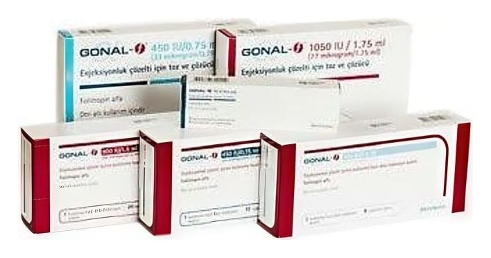

Gonal-F 450 IU/0,72 ml Kullanimahazir Dolu Enjeksiyon Kalemindeenjeksiyonluk Çözelti, 1 Adet

Ne için kullanılır
KT · Bölüm 1GONAL-f, kullanıma hazır dolu enjeksiyon kaleminde berrak, renksiz enjeksiyonluk çözelti olarak takdim edilir. 1 adet kullanıma hazır dolu enjeksiyon kalemi ve uygulama için 12 adet iğnelik bir ambalajda sağlanır.
GONAL-f "follitropin alfa" isminde bir ilaç içermektedir. Follitropin alfa "gonadotropinler" olarak adlandırılan hormon ailesine ait bir tür "Folikül Uyarıcı Hormon"dur (FSH). Gonadotropinler üreme ve fertilite ile ilişkilidir.
Yetişkin kadınlarda, GONAL-f: • Yumurtlaması olmayan ve klomifen sitratla tedaviye cevap vermemiş kadınlarda yumurtlamayı sağlamak üzere kullanılabilir. • "in vitro fertilizasyon", "gamet intra fallopian transfer" veya "zigot intra fallopian transfer" dölleme gibi yardımla üreme teknolojileri prosedürlerine (hamile kalmanıza yardımcı olabilecek prosedürler) tabi tutulan kadınlarda bir çok folikülün (her biri bir yumurta içeren) gelişmesini sağlamada kullanılır. • Vücutlarının çok düşük düzeyde gonadotropin (FSH ve LH) üretmesine bağlı olarak yumurtlaması olmayan kadınlarda, lutropin alfa (rekombinant insan luteinizan hormonu) adı verilen bir başka hormonla birlikte yumurtlamayı sağlamak üzere kullanılır. Yetişkin erkeklerde, GONAL-f: • Bir başka ilaç olan insan koryonik gonadotropini (hCG) ile birarada, hormon yetersizliği nedeniyle kısır olan erkeklerde sperm oluşturmak için kullanılır.